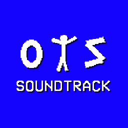

On The Screen OST - саундтрек для On The Screen (логично), который сделал Swappermawe!
Вы можете послушать этот OST здесь, и вскоре сможете и на YouTube!
On The Screen OST распространяется по лицензии СС BY-NC-SA (Creative Commons Attribution-NonCommercial-ShareAlike 4.0 International/«С указанием авторства - Некоммерческая - С сохранением условий» версии 4.0 Международная).
Что бы получить копию лицензии,
зайдите на creativecommons.org/licenses/by-nc-sa/4.0/
OST 01 - Main Screen
OST 02 - The Place
OST 03 - Gross...
OST 04 - In The Dark
OST 05 - And As The Nature Calls...
Загрузить OST ← ОБРАТНО